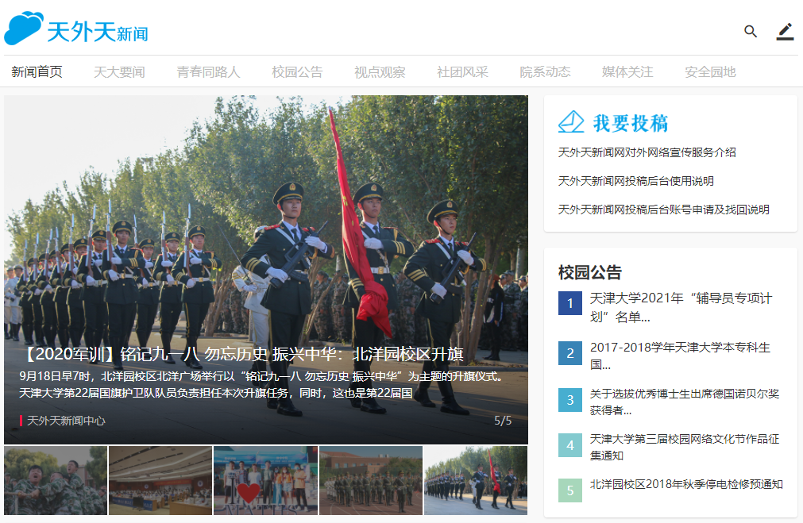

微北洋4.0 天外天介绍
天外天下设天外天新闻中心和天外天工作室，是天津大学唯一的全媒体平台，连续八年荣获天津大学十佳社团第一名。
天外天新闻网，连续七年荣获教育部“全国高校百佳网站”的称号、连续四年荣获“全国高校十佳新闻网站”的称号。2019年，天外天荣获教育部中国大学生在线“优秀校园网络通讯站”称号。
天外天新闻中心（TWT NEWS）下属的“天外天”微信公众号，关注人数超过65000人，累计发布文章千余篇，年均推送阅读量过百万。拥有若干原创作品，同时于校内各大平台组织、机关部处、学生社团、校外网络平台等合作开展活动和宣传。
天外天始终追求高质量原创文章，目前天外天公众号拥有“斜杠青年”“践·行”“戒·耀”“我们”“干货”等众多出色专题，同时还推出情怀散文、通知公告、校园新闻......
由天外天全面开发维护的天外天新闻网，日点击量两万余次。作为校园官方媒体，网站内容覆盖校内外各个热点话题，2019至2020年度发稿千余篇总阅读量百万余人次。
天外天工作室（TWT Studio）起源于2000年卫津路校区的一间小办公室，今年是工作室陪伴天大学子走过的第21年。二十一年来，热爱互联网的天大学子不断投身其中，为工作室注入新鲜血液，怀揣着对互联网的热爱，用自己的努力建设着母校。现在天外天工作室是唯一负责学校各项互联网建设事业的学生互联网团队。

初遇北洋，新生入学教育网站与你相伴；学在北洋，微北洋app总结信息，服务师生；思在北洋，校务专区聚焦时事，建设校风；悟在北洋，青年大学习积分系统助你提升思想觉悟；身在北洋，天外天专属表情包送来欢乐；念在北洋，海棠节H5引来万千遐想......
TWT Studio 分为六个部门，分别是：
产品组 —— 抓住头脑风暴最新奇的那一点
观察用户日常潜在需求，构建产品原型思路，当之无愧先行者。后期要负责产品推广和运营，跟进用户反馈进行迭代。
设计组 —— 美感是每一位设计师的灵魂，设计师的脑中装着万物，等待你去发掘
通过设计提升用户体验，提高交互满意度。掌握设计原理、方法与工具，设计/改进符合需求的宣传产品。
程序组 —— 负责工作室项目的后端开发工作
产品构造者，与前端工程师配合完成功能的实现，负责数据维护、用户数据分析。后台优化、迭代升级，都离不开程序组。
Android组 —— 做移动平台中最亮眼的存在
直接面向用户。打磨设计，完善产品，用最全面的考虑、最精妙的架构，开发最符合用户需要的app；敏捷开发，小步迭代，用最澎湃的热情、最前沿的技术，做出最富有极客精神的作品。
iOS组 —— Being creative, being imaginative.
关注前沿技术，营造极客氛围，负责移动产品iOS客户端的开发，力求做出最酷的移动端应用。
前端组 —— 起步于Web，不止于Web
前端即网站前台部分，人机交互的用户侧，运行在PC端，移动端等浏览器上展现给用户浏览的网页。而前端工程师则负责用完美的动效设计、流畅的操作逻辑，用最人文的思考，把僵硬的数据以最生动的方式呈现给用户。
过去的二十多年，TWT Studio 为天大学子带来许多便利，网络产品200+，注册用户100000+，日访问量超过两万，web总访问量超过亿次，这些荣誉的背后，是无数工作室成员的日夜辛劳。
如何联系TWT Studio
卫津路校区 鹏翔四斋一楼110室
北洋园校区 大通学生活动中心 C301
如何加入TWT Studio
天外天工作室每年会在秋季和春季进行纳新，可以关注天外天公众号（微信搜索天外天），了解相关信息。也可以加入TWT Studio 预备队（预备队群号：627731307），或者到工作室询问，也可以在微北洋校务专区下属天外天版块进行提问，我们会尽快回复消息。